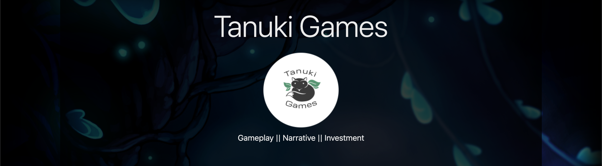
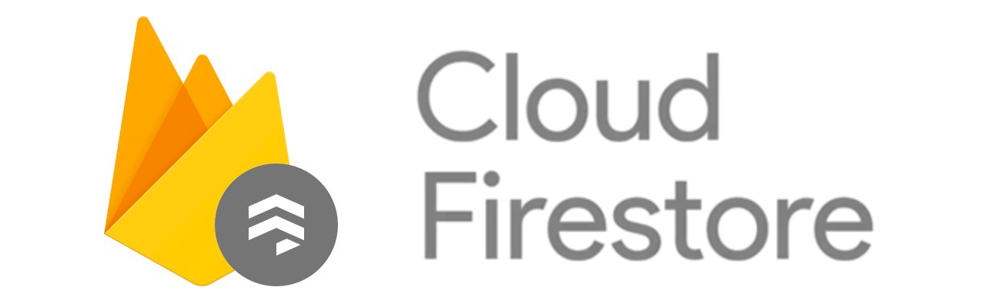

Previous Work
Click on each project to learn more...
Capstone Project - Tanuki Games

API Site - TFT Assist
RMS Project - Law and Public Safety


User interactivity is integral to me when designing projects. The layout, prompts, and traversal of the site should have its own flare that does not distract or inhibit the user. Nothing is more frustrating than when navigating a site is its barrier for use and frequent traffic.
A site should be as beautiful as it is to use. What the user sees leaves an impression as the more professional it looks, the more trustworthy it is. The shopping cart, data on a display, or simply just the colors all affect how a user can percieve your business.
Click on each item to learn more...
Click on each project to learn more...